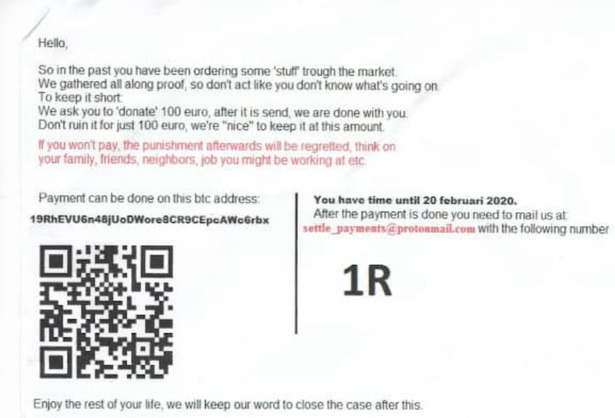
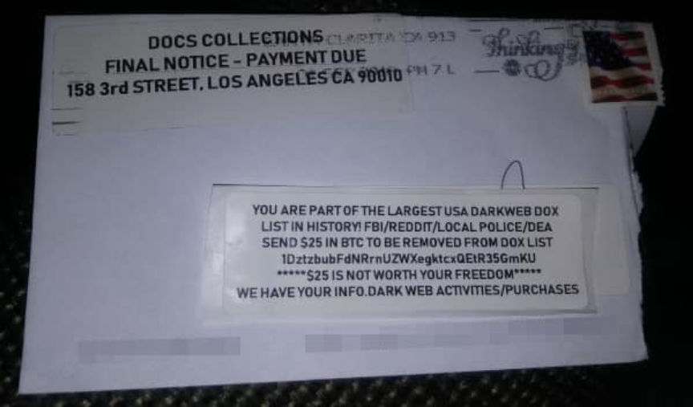
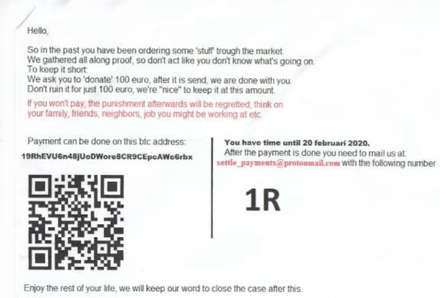
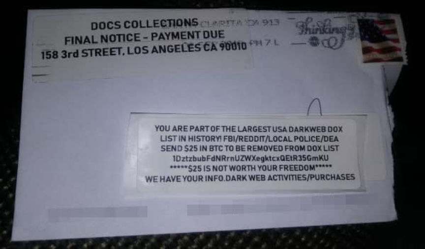

Darkweb Vendors are Still Blackmailing Customers
~2 min read | Published on 2020-02-04, tagged Black-mailing, Darkweb-Vendor using 436 words.
Desperate darkweb vendors have been sending extortion letters to their customers since Silk Road era. They threaten to spread false accusations, ruin the customer’s life, or involve law enforcement unless the customer sends a certain amount of Bitcoin. At least one vendor is currently sending these letters to former Apollon Market users.
The threats are empty. And are often no more realistic than your average 419 scam. Below is the most recent one shared with Darknetlive by a skeptical recipient. The recipient, a user of Apollon Market, wondered if other customers had received similar letters.
Hello.
So in the past you have been ordering some ‘stuff trough the market. We gathered all along proof. so don’t act like you don’t know what’s going on.
To keep it short:
We ask you to ‘donate’ 100 euro. after it is send we are done with you. Don’t ruin it for just 100 euro, we’re “nice” to keep it at this amount.
if you won’t pay, the punishment afterwards will be regretted. think on your family, friends. neighbors. job you might be working at etc.

Vendors are not always to blame, though. Med3l1n, one of the Wall Street Market staff members, sent similar messages to Wall Street Market customers after the admins had exit scammed. Med3l1n only had access to unecrypted addresses. The user who received the letter pictured in this article explained they had encrypted their messages to vendors, ruling out the involvement of market staff.
Seasoned users of darkweb markets will likely recognize the letter as a scam and toss it in the bin after reading it. Relatively inexperienced users will likely feel similarly skeptical about the letter. However, some letters are more convincing than the one above, such as the one below posted on Twitter by @kyletorpey.
([img=]Full image available here.[/img])
Gwern, in the thread on Twitter, pointed out that these letters also incriminate the vendor responsible for it; there is no legitimate reason for a vendor to save addresses. As history has shown, law enforcement will use the records in future investigations and vendors will still spend time in prison.
This one from Reddit comes in a disturbing envelope:
And @x0rz posted another good example. (
)[img=]Congrats you fuck...[/img]
If you receive one of these letters, just toss it. (And if you want to pass the information along to darknetlive, feel free). If you receive one of these letters from Customs, USPIS, or another law enforcement agency, consult your attorney before posting a picture of the letter on the internet.
Some related Reddit posts:
Received blackmail letter bitcoin Lovely Extortion Letter Arrived Today! Blackmail because of DarkNet Orders Darknet Blackmail
The threats are empty. And are often no more realistic than your average 419 scam. Below is the most recent one shared with Darknetlive by a skeptical recipient. The recipient, a user of Apollon Market, wondered if other customers had received similar letters.
Hello.
So in the past you have been ordering some ‘stuff trough the market. We gathered all along proof. so don’t act like you don’t know what’s going on.
To keep it short:
We ask you to ‘donate’ 100 euro. after it is send we are done with you. Don’t ruin it for just 100 euro, we’re “nice” to keep it at this amount.
if you won’t pay, the punishment afterwards will be regretted. think on your family, friends. neighbors. job you might be working at etc.

A letter received days three days ago by a user of Apollon Market
Vendors are not always to blame, though. Med3l1n, one of the Wall Street Market staff members, sent similar messages to Wall Street Market customers after the admins had exit scammed. Med3l1n only had access to unecrypted addresses. The user who received the letter pictured in this article explained they had encrypted their messages to vendors, ruling out the involvement of market staff.
Seasoned users of darkweb markets will likely recognize the letter as a scam and toss it in the bin after reading it. Relatively inexperienced users will likely feel similarly skeptical about the letter. However, some letters are more convincing than the one above, such as the one below posted on Twitter by @kyletorpey.
([img=]Full image available here.[/img])
Gwern, in the thread on Twitter, pointed out that these letters also incriminate the vendor responsible for it; there is no legitimate reason for a vendor to save addresses. As history has shown, law enforcement will use the records in future investigations and vendors will still spend time in prison.
This one from Reddit comes in a disturbing envelope:
Congrats you fuck...
And @x0rz posted another good example. (
)[img=]Congrats you fuck...[/img]
If you receive one of these letters, just toss it. (And if you want to pass the information along to darknetlive, feel free). If you receive one of these letters from Customs, USPIS, or another law enforcement agency, consult your attorney before posting a picture of the letter on the internet.
Some related Reddit posts: